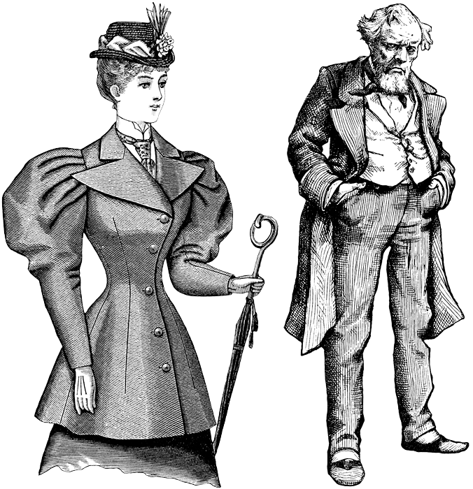

Proyecto Final EPDI: Defensa Estadística con Apoyo de IA
Formación Diferenciada | Colegio Portaliano, 2026

1 Presentación
El curso Estadística y Probabilidad Descriptiva e Inferencial (EPDI) culmina con una actividad académica formal, similar a una defensa de tesis profesional. En grupos de 2 a 4 integrantes, investigarán un fenómeno estadístico, un experimento clásico o un caso real de interés, y presentarán sus hallazgos ante un tribunal (el profesor y sus compañeros). La presentación será grabada y, con la autorización correspondiente, publicada en YouTube.
Novedad: Esta versión del proyecto incorpora el uso explícito de Inteligencia Artificial (IA) como herramienta de investigación. Utilizarán NotebookLM (disponible con sus cuentas institucionales de Google Workspace) para apoyar la revisión de fuentes, la generación de hipótesis, el análisis de datos y la preparación de la presentación. Sin embargo, todo resultado generado por IA deberá ser verificado, interpretado y presentado por ustedes. El valor del proyecto está en su capacidad para pensar críticamente, no en delegar el trabajo en la máquina.
2 Objetivos del proyecto
Al finalizar esta actividad, serás capaz de:
- Aplicar conceptos estadísticos (tipos de variables, asociación, causalidad, diseño experimental, muestreo, etc.) a un problema concreto.
- Utilizar NotebookLM como asistente de investigación de manera crítica y ética.
- Defender oralmente tus conclusiones ante una audiencia, con argumentos basados en datos y fuentes confiables.
- Producir un video de calidad académica que pueda ser publicado en un canal educativo.
3 Temas sugeridos (pueden repetirse entre grupos)
Pueden elegir un fenómeno estadístico, un experimento clásico o un caso real de actualidad. Algunas ideas:
- Experimentos clásicos: El experimento de los stents (ACV), el estudio de la dama que cató el té (Fisher), la paradoja de Simpson (ejemplo real), el experimento de Milgram (obediencia a la autoridad), el efecto placebo en cirugía, etc.
- Fenómenos actuales: Correlaciones espurias famosas (Nicolas Cage y ahogamientos, etc.), análisis de datos deportivos, encuestas políticas y sesgos de muestreo, estudios observacionales sobre salud y estilo de vida, etc.
- Casos reales chilenos: Datos del SIMCE, estadísticas de movilidad en San Felipe, análisis de un estudio de opinión pública, etc.
Si tienen otra idea, consúltenla con el profesor.
4 Estructura de la defensa (obligatoria)
Cada grupo dispondrá de 12 minutos de presentación + 5 minutos de preguntas. La presentación debe seguir esta estructura:
4.1 Contexto y pregunta de investigación (≈ 2 min)
- ¿Qué fenómeno, experimento o caso estudian?
- ¿Por qué es relevante para la ciencia o la sociedad?
- Pregunta de investigación o hipótesis inicial.
4.2 Metodología y datos (≈ 3 min)
- Si es un experimento clásico: describan su diseño (control, aleatorización, etc.).
- Si es un caso real: ¿de dónde obtuvieron los datos? ¿Qué tipo de estudio es (observacional o experimental)?
- Papel de la IA: ¿Cómo usaron NotebookLM para seleccionar fuentes, resumir información o generar ideas? Muestren ejemplos concretos (pantallazos, citas).
4.3 Análisis estadístico (≈ 4 min)
- Presenten tablas, gráficos y medidas resumen (media, mediana, proporciones, etc.).
- Si aplica, incluyan pruebas de hipótesis, intervalos de confianza o análisis de correlación.
- Verificación: ¿Cómo validaron que los resultados de la IA eran correctos? Señalen al menos un error o imprecisión detectada y cómo lo corrigieron.
4.4 Conclusiones e impacto (≈ 3 min)
- ¿Qué responden a la pregunta de investigación?
- ¿Qué limitaciones tiene su análisis?
- ¿Qué impacto tuvo o tiene este fenómeno/experimento en la ciencia moderna?
4.5 Ronda de preguntas (5 min)
- El tribunal (profesor y compañeros) preguntará sobre los conceptos estadísticos, el uso de IA o la validez de las conclusiones.
5 Uso de NotebookLM (obligatorio y evaluado)
- Deben usar NotebookLM al menos para:
- Cargar 3 a 5 fuentes relevantes (PDFs de OpenIntro, artículos científicos, noticias, bases de datos).
- Generar un resumen automático de una de las fuentes y luego reescribirlo con sus palabras (entregarán ambas versiones en el anexo).
- Pedir a la IA que sugiera tres gráficos para representar sus datos; luego elegirán uno y justificarán su elección.
- Transparencia: Deberán incluir un Anexo (1 página) con:
- Captura de pantalla de la interfaz de NotebookLM con las fuentes cargadas.
- Lista de los prompts utilizados y las respuestas de la IA.
- Explicación de al menos una corrección que hicieron a un error o imprecisión de la IA.
- Evaluación: Se valorará la calidad de los prompts, la pertinencia de las fuentes y la capacidad de detectar y corregir errores.
6 Grabación y publicación (voluntario pero recomendado)
- La defensa será grabada en video (con celular o cámara) durante la jornada de presentaciones.
- Al inicio del video, cada integrante dirá su nombre y curso.
- Con la autorización de apoderados (se entregará carta modelo), los mejores videos se publicarán en el canal de YouTube del colegio o en una lista de reproducción del curso.
- La publicación es voluntaria; ningún estudiante será obligado a aparecer en internet.
7 Criterios de evaluación (rúbrica)
| Criterio | Ponderación | Indicadores |
|---|---|---|
| Dominio conceptual y estadístico | 35% | Correcta identificación de variables, tipos de estudio, análisis e interpretación de datos. |
| Uso crítico de IA (NotebookLM) | 20% | Calidad de prompts, selección de fuentes, verificación de errores, transparencia en el anexo. |
| Calidad de la presentación oral | 20% | Claridad, estructura, vocabulario técnico, manejo del tiempo, respuesta a preguntas. |
| Material de apoyo (diapositivas, gráficos) | 15% | Diseño profesional, gráficos legibles, citas de fuentes. |
| Formalidad y cumplimiento | 10% | Vestimenta formal, puntualidad, entrega de anexo, autorización de publicación (si aplica). |
Nota: La rúbrica detallada será publicada en el sitio web del curso y en Classroom una semana antes de la primera entrega.
8 Preguntas frecuentes
¿Puedo usar otra IA además de NotebookLM? Sí, pero debes indicarlo en el anexo y justificar por qué la elegiste. NotebookLM es la recomendada por su integración con Google Workspace y su capacidad de trabajar sobre documentos subidos.
¿Qué pasa si la IA da una respuesta incorrecta? Se espera que la detectes y corrijas. Eso suma puntos en el criterio de “verificación”.
¿Puedo pedir a la IA que redacte la presentación completa? No. La IA es una asistente, no una sustituta. Debes redactar con tus palabras; el uso excesivo de texto generado será penalizado.
¿Qué vestimenta se considera formal? Para hombres: camisa, pantalón de vestir, zapatos cerrados (corbata opcional). Para mujeres: blusa, vestido o pantalón formal, zapatos cerrados. No se permite jeans, poleras estampadas ni zapatillas deportivas.
¿Si no quiero salir en YouTube? Puedes solicitar que tu grupo no sea grabado o que el video no sea publicado. La actividad se puede aprobar igual, pero la publicación voluntaria otorga un punto extra (no obligatorio).
9 Anexos
- Carta de autorización para publicación en YouTube (se entregará en papel).
- Plantilla para el anexo de uso de IA (descargable desde Classroom).
¡Manos a la obra! Este proyecto es la oportunidad de demostrar todo lo que han aprendido y, de paso, convertirse en usuarios críticos y responsables de la inteligencia artificial. Cualquier duda, consulten con el profesor.
Prof. Hans Sigrist